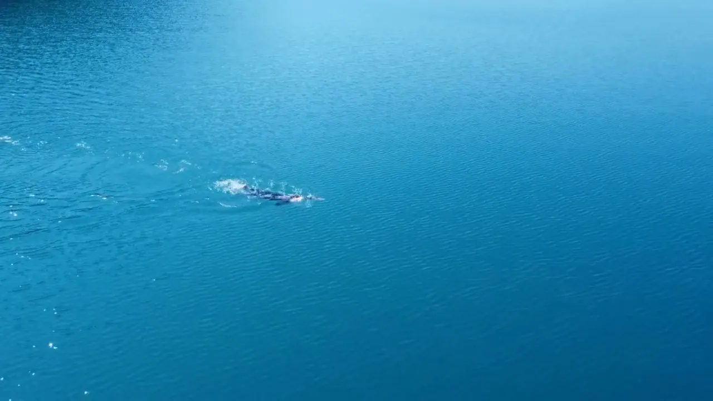
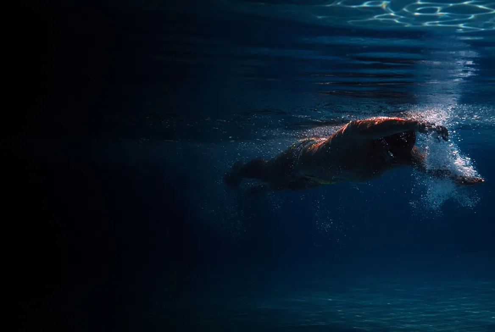

01 · Natation
Nager
La natation est d’abord une affaire de technique : un corps « projectile et propulseur » pour avancer en dépensant moins.
- VIDAnalyse vidéo de votre nage, retours personnalisés
- LIVESwimtalking : correction en direct dans l’eau
- EAULignes d’eau privatisées en stage, séances en eau libre